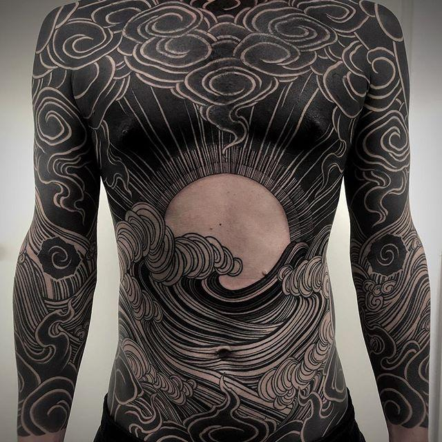
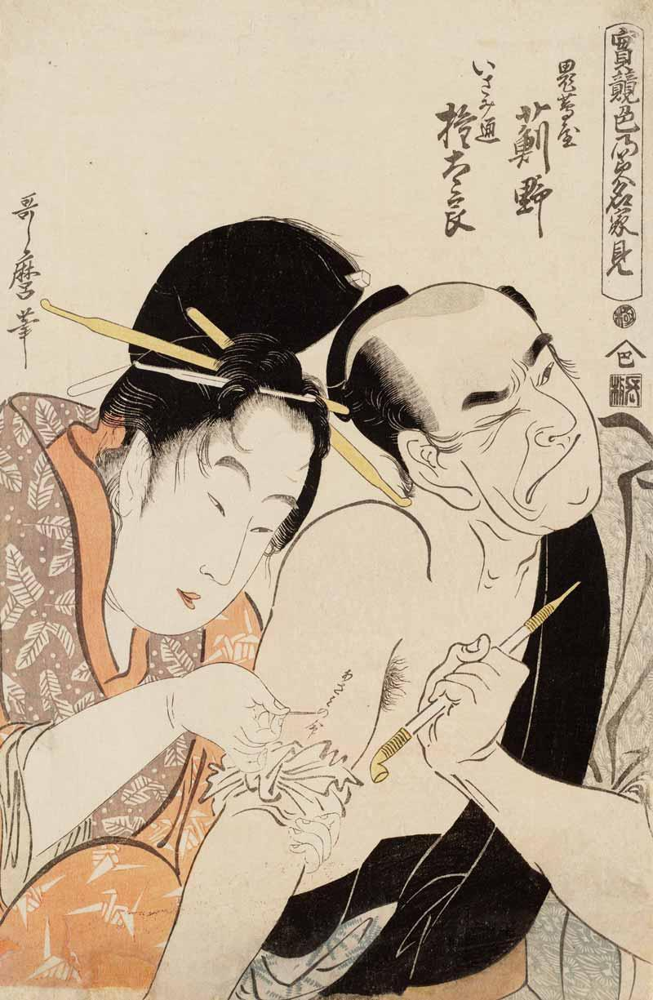
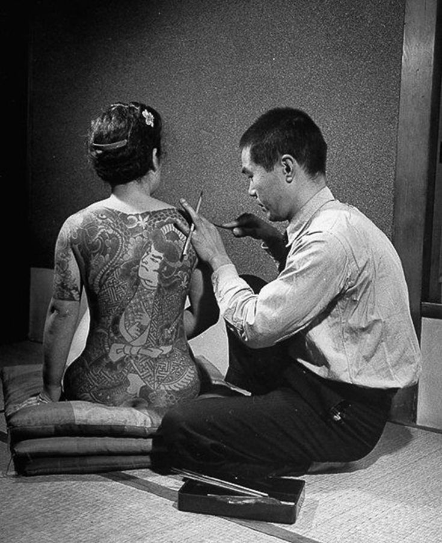

Caroline's Column
Caroline's Column Featured Article
The Culture of Tattoos in Japan

Tattoos in Japan have a deep and complex history, intertwining artistic expression, spirituality, and social stigma. Historically, tattooing in Japan dates back to the Jomon period (14,000–300 BCE), where it served as both a spiritual and decorative practice. During the Edo period (1603–1868), tattoos became prominent through the influence of woodblock art and popular literature like Suikoden, where heroes were depicted with elaborate body art. This era is considered a golden age of tattooing in Japan, with intricate designs becoming a form of self-expression and identity.

However, tattoos in Japan are also linked to a darker chapter: their association with criminals. During the Edo period, tattoos were used as punishment, marking individuals guilty of crimes. This association persisted, and in the early Meiji era, tattoos were outlawed to avoid presenting Japan as a barbaric nation to the West. While tattooing was legalized after World War II, the association with the yakuza (organized crime syndicates) continued to stigmatize tattooed individuals.
In recent years, younger generations in Japan have started to embrace tattoos as a form of personal expression, influenced by global trends and Western culture. Artists and enthusiasts alike celebrate the artistry of traditional Irezumi and modern styles. However, tattoos still face social resistance. Many public spaces like onsens (hot springs) and gyms prohibit visible tattoos, associating them with crime. Despite these challenges, tattoo-friendly spaces are emerging, reflecting Japan’s slow shift towards acceptance, especially in urban areas and among youth(tsunagu Japan)(DW).
Latest News
Latest News: Evolving Legal Landscape for Tattoos in Japan

A significant development in Japan’s tattoo culture occurred in 2020 when the Supreme Court ruled that tattoo artists no longer need medical licenses to practice. This ruling marked a critical victory for the tattooing community, challenging the government’s previous stance that equated tattooing with medical procedures. The case involved Taiki Masuda, a tattoo artist who fought against a fine imposed on him for tattooing without a medical license. The court’s decision recognized tattooing as a form of artistic expression rather than a medical procedure, bringing relief to many in the industry.
Despite this legal victory, the tattoo industry in Japan remains in a gray area, with further regulatory reforms necessary to clarify the status of the profession. The cultural perception of tattoos is also evolving, albeit slowly. While younger generations are embracing body art, traditional views continue to associate tattoos with criminality, particularly due to the yakuza’s historical use of full-body tattoos as markers of gang affiliation.
In addition to this legal shift, Japan's defense forces are considering loosening their tattoo ban to boost recruitment, reflecting a broader trend toward greater tolerance of tattoos in the public sphere. This could signal a future where tattoos, while still a niche subculture, gain wider acceptance in Japanese society (DW)(VICE)(Japan Insider Secrets).
This ongoing cultural and legal transformation reflects Japan’s gradual adaptation to global norms while still grappling with its deeply entrenched views on tattoos.